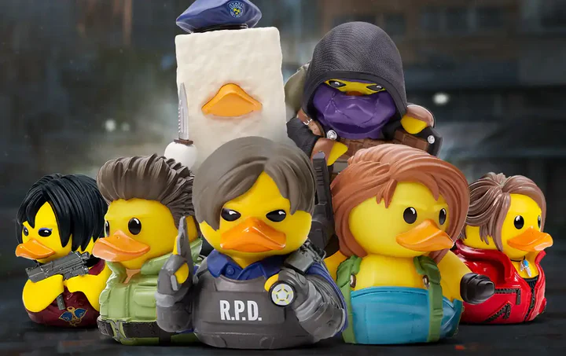
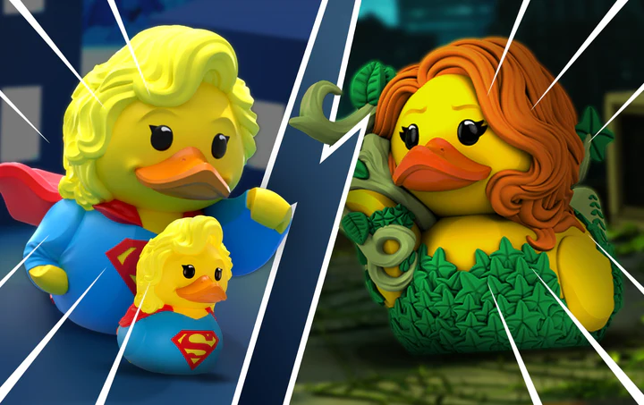

DUCKS! is a website about ducks. We have a lot of information about ducks, including their history, types, and fun facts. We also have a gallery of duck pictures and a contact page where you can reach out to us with any questions or comments.

If you love video games, movies, and pop culture, you need to know about TUBBZ!
Created by Numskull Designs, TUBBZ
is a unique series of collectible
rubber ducks that
look exactly like your favorite fictional characters.
From legendary gaming heroes to iconic movie villains, these figures feature incredible detail.
You can find ducks styled after characters from
popular worlds like World of Warcraft, Cyberpunk 2077,
Hogwarts Legacy, and many more. Every
single duck captures the perfect
essence of the character,
complete with mini weapons, costumes, and signature hairstyles.
Each TUBBZ collectible comes in a special, stackable display box shaped like a miniature bathtub.
This makes them incredibly easy and
fun to collect and display on your desk or shelf.
Whether you want to treat yourself or find the perfect gift for a gamer
friend,
TUBBZ
ducks are the ultimate addition to any fan's collection. Start your collection today!

In the darkest nights and the brightest days, a new league of heroes arises—and they are made of rubber!
Welcome to the world of DC Comics TUBBZ, where the legendary defenders of Gotham City and Metropolis
undergo a mysterious
transformation.
The Joker is up to his old tricks again, but this time, the Dark Knight is ready to fight back in full
feathered glory.
From Batman’s iconic cowl to Harley Quinn’s chaotic mallet, these collectible figures feature incredible
comic-book accuracy.
You can assemble your own Justice League on your shelf with Superman,
Wonder Woman, and The Flash, or
build an alliance of notorious Arkham villains.
Each heroic duck arrives inside a special, stackable collector’s bathtub featuring the official DC logo.
They are perfect for guarding your desk from evil or making a spectacular gift for a fellow comic book fan.
Gotham needs
a savior—start your collection today!